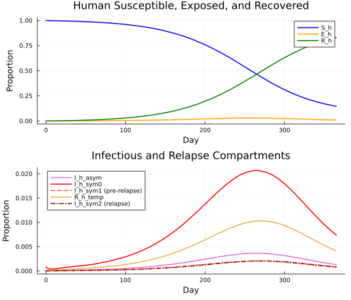
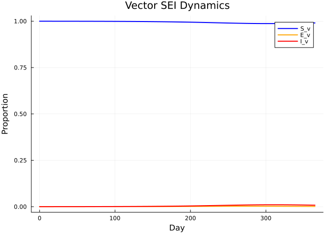
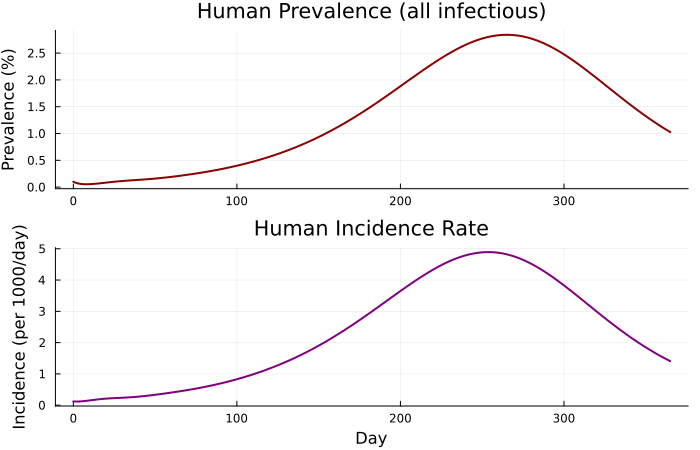
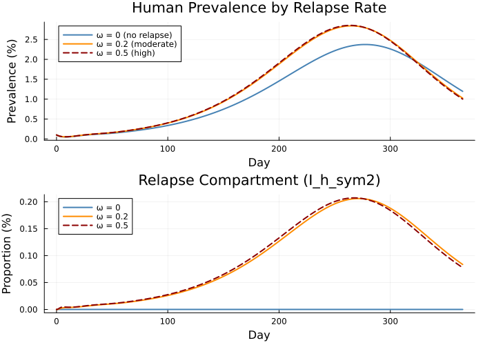

Oropouche (OROV) Vector-Borne Model with Relapse
Introduction
Oropouche virus (OROV) is an arbovirus transmitted by biting midges (Culicoides paraensis) and is the second most common arboviral disease in Brazil after dengue. A distinctive clinical feature is relapse: a fraction of symptomatic patients experience a recurrence of symptoms after an initial period of apparent recovery.
This vignette builds an ODE model coupling human and vector compartments with a relapse pathway. It demonstrates:
- Coupled human and vector ODE dynamics
- An Erlang-chain delay to approximate the extrinsic incubation period (since
delay()is not available in Odin.jl) - Asymptotic vs symptomatic infection
- Relapse dynamics: recovered individuals can experience a second symptomatic episode
- Scenario comparison across relapse probabilities
using Odin
using Plots
using BenchmarkToolsModel Description
Human compartments
The human population is split into 8 compartments, all expressed as proportions of the total human population ($N_h = 1$):
\[\begin{aligned} \frac{dS_h}{dt} &= -\lambda_h S_h \\ \frac{dE_h}{dt} &= \lambda_h S_h - \gamma E_h \\ \frac{dI_h^{\text{asym}}}{dt} &= (1 - \theta)\,\gamma E_h - \sigma I_h^{\text{asym}} \\ \frac{dI_h^{\text{sym0}}}{dt} &= \theta\,\gamma E_h - \sigma I_h^{\text{sym0}} \\ \frac{dI_h^{\text{sym1}}}{dt} &= \pi_r\,\sigma I_h^{\text{sym0}} - \psi I_h^{\text{sym1}} \\ \frac{dR_h^{\text{temp}}}{dt} &= \psi I_h^{\text{sym1}} - \omega R_h^{\text{temp}} \\ \frac{dI_h^{\text{sym2}}}{dt} &= \omega R_h^{\text{temp}} - \epsilon I_h^{\text{sym2}} \\ \frac{dR_h}{dt} &= \sigma I_h^{\text{asym}} + (1 - \pi_r)\,\sigma I_h^{\text{sym0}} + \epsilon I_h^{\text{sym2}} \end{aligned}\]
where $\lambda_h = m \cdot a \cdot b_h \cdot I_v$ is the force of infection from vectors to humans.
Vector compartments
Vectors follow an SEI model (no recovery), with an Erlang-chain delay approximating the extrinsic incubation period (EIP). Instead of delay(I_h_total, τ) we use $k = 12$ stages, each with rate $k / \tau$:
\[\begin{aligned} \frac{dS_v}{dt} &= \mu (1 - S_v) - \lambda_v S_v \\ \frac{dE_v}{dt} &= \lambda_v \cdot D_{S_v}[12] - (\mu + \kappa) E_v \\ \frac{dI_v}{dt} &= \kappa E_v - \mu I_v \end{aligned}\]
where $\lambda_v = a \cdot b_v \cdot D_{I_h}[12]$ uses the delayed total human infectiousness via the Erlang chain, and $D_{S_v}[12]$ tracks the delayed susceptible vector proportion.
Erlang chain delay
Each delay chain has $k = 12$ stages with rate $k / \tau$ per stage (mean delay = $\tau$ days):
\[\frac{dD[1]}{dt} = (X - D[1]) \cdot \frac{k}{\tau}, \quad \frac{dD[i]}{dt} = (D[i-1] - D[i]) \cdot \frac{k}{\tau} \text{ for } i = 2, \ldots, 12\]
Model Definition
gen = @odin begin
# Erlang chain parameters
k_delay = parameter(12)
delay_rate = k_delay / delay_tau
delay_tau = parameter(12.0)
# === Erlang chain: delayed total human infectiousness ===
dim(D_Ih) = k_delay
I_h_total = I_h_asym + I_h_sym0 + I_h_sym1 + I_h_sym2
deriv(D_Ih[1]) = (I_h_total - D_Ih[1]) * delay_rate
deriv(D_Ih[2:k_delay]) = (D_Ih[i - 1] - D_Ih[i]) * delay_rate
initial(D_Ih[1:k_delay]) = I_init_h
# === Erlang chain: delayed susceptible vectors ===
dim(D_Sv) = k_delay
deriv(D_Sv[1]) = (S_v - D_Sv[1]) * delay_rate
deriv(D_Sv[2:k_delay]) = (D_Sv[i - 1] - D_Sv[i]) * delay_rate
initial(D_Sv[1:k_delay]) = 1.0 - I_init_v
# === Forces of infection ===
lambda_h = m * a * b_h * I_v
lambda_v = a * b_v * D_Ih[k_delay]
# === Human dynamics (proportions) ===
deriv(S_h) = -lambda_h * S_h
deriv(E_h) = lambda_h * S_h - gamma * E_h
deriv(I_h_asym) = (1.0 - theta) * gamma * E_h - sigma * I_h_asym
deriv(I_h_sym0) = theta * gamma * E_h - sigma * I_h_sym0
deriv(I_h_sym1) = pi_relapse * sigma * I_h_sym0 - psi * I_h_sym1
deriv(R_h_temp) = psi * I_h_sym1 - omega * R_h_temp
deriv(I_h_sym2) = omega * R_h_temp - epsilon * I_h_sym2
deriv(R_h) = sigma * I_h_asym + (1.0 - pi_relapse) * sigma * I_h_sym0 + epsilon * I_h_sym2
# === Vector dynamics (proportions) ===
deriv(S_v) = mu * (1.0 - S_v) - lambda_v * S_v
deriv(E_v) = lambda_v * D_Sv[k_delay] - (mu + kappa) * E_v
deriv(I_v) = kappa * E_v - mu * I_v
# === Outputs ===
output(prevalence_h) = I_h_total
output(incidence_h) = lambda_h * S_h
output(prevalence_v) = I_v
output(human_pop) = S_h + E_h + I_h_asym + I_h_sym0 + I_h_sym1 + R_h_temp + I_h_sym2 + R_h
# === Initial conditions ===
initial(S_h) = 1.0 - I_init_h
initial(E_h) = 0.0
initial(I_h_asym) = (1.0 - theta) * I_init_h
initial(I_h_sym0) = theta * I_init_h
initial(I_h_sym1) = 0.0
initial(R_h_temp) = 0.0
initial(I_h_sym2) = 0.0
initial(R_h) = 0.0
initial(S_v) = 1.0 - I_init_v
initial(E_v) = 0.0
initial(I_v) = I_init_v
# === Parameters ===
gamma = parameter(0.167)
theta = parameter(0.85)
pi_relapse = parameter(0.5)
sigma = parameter(0.2)
psi = parameter(1.0)
epsilon = parameter(1.0)
kappa = parameter(0.125)
omega = parameter(0.2)
mu = parameter(0.03)
m = parameter(20.0)
a = parameter(0.3)
b_h = parameter(0.2)
b_v = parameter(0.05)
I_init_h = parameter(0.001)
I_init_v = parameter(0.0001)
endOdin.DustSystemGenerator{var"##OdinModel#277"}(var"##OdinModel#277"(0, [:D_Ih, :D_Sv, :S_h, :E_h, :I_h_asym, :I_h_sym0, :I_h_sym1, :R_h_temp, :I_h_sym2, :R_h, :S_v, :E_v, :I_v], [:k_delay, :delay_tau, :gamma, :theta, :pi_relapse, :sigma, :psi, :epsilon, :kappa, :omega, :mu, :m, :a, :b_h, :b_v, :I_init_h, :I_init_v], true, false, false, true, false, Dict{Symbol, Array}()))Simulation
pars = (
k_delay = 12.0,
gamma = 0.167,
theta = 0.85,
pi_relapse = 0.5,
sigma = 0.2,
psi = 1.0,
epsilon = 1.0,
kappa = 0.125,
omega = 0.2,
mu = 0.03,
m = 20.0,
a = 0.3,
b_h = 0.2,
b_v = 0.05,
I_init_h = 0.001,
I_init_v = 0.0001,
delay_tau = 12.0,
)
sys = System(gen, pars; n_particles = 1)
reset!(sys)
times = collect(0.0:0.5:365.0)
result = simulate(sys, times)39×1×731 Array{Float64, 3}:
[:, :, 1] =
0.001
0.001
0.001
0.001
0.001
0.001
0.001
0.001
0.001
0.001
⋮
0.0
0.0
0.9999
0.0
0.0001
0.001
0.00011988000000000002
0.0001
1.0
[:, :, 2] =
0.0009870975776440098
0.000998026559001296
0.0009999147744383838
0.0009998798712333335
0.0010000172625546358
0.001000001030752342
0.0009999997631437922
0.0009999999624713265
0.00099999999718668
0.0009999999998426448
⋮
2.94013425254667e-7
5.4778909177471213e-5
0.9998940455425156
7.2160199298514365e-6
9.873845982797075e-5
0.0009392415160730842
0.00011836061136865198
9.873845982797075e-5
1.0000000000000002
[:, :, 3] =
0.0009551010762017311
0.0009873883874057386
0.0009971047999367828
0.0009995732785131929
0.000999881487389212
0.0009999893588576926
0.0009999997402627117
0.0010000000252925842
0.0010000000030057734
0.0010000000001937957
⋮
1.5651766935802406e-6
0.00010503562475833162
0.9998881797793513
1.38939158395385e-5
9.792639301783065e-5
0.0008771736434520672
0.00011738024064203143
9.792639301783065e-5
0.9999999999999999
;;; …
[:, :, 729] =
0.010625513849373908
0.010814671739717611
0.011006208497978872
0.011200094532644604
0.011396329474407274
0.011594845356522812
0.011795699556835942
0.011998700090965524
0.012204112934761752
0.012411391133516992
⋮
0.0008496473205421635
0.8280568603707404
0.9905412022003669
0.0013656311389518736
0.008089745407773975
0.010438744951508042
0.0014337851039764222
0.008089745407773975
0.9999999999999998
[:, :, 730] =
0.010532430762817124
0.01072039143858126
0.010910738193896787
0.011103444734501661
0.011298507642439462
0.011495870133404482
0.011695570845559344
0.011897458007472743
0.012101729503575485
0.012307945942979176
⋮
0.0008424314658002644
0.8289850988912658
0.9905877888519856
0.0013550480634565197
0.008053690303982014
0.010346866555172928
0.0014204986684814684
0.008053690303982014
0.9999999999999996
[:, :, 731] =
0.010439951128950659
0.010626710061971205
0.010815864587664356
0.011007384267897179
0.011201276062926072
0.011397467655778494
0.01159603081160791
0.011796754456513348
0.011999957520269512
0.012204958576712133
⋮
0.0008352572003581657
0.8299052727709576
0.9906344518275052
0.0013445087341137341
0.008017516522047968
0.010255593784032069
0.0014073168113784673
0.008017516522047968
0.9999999999999996Human Compartment Dynamics
The state indices follow the order of initial() declarations. The first 12 states are the Erlang chain for $D_{I_h}$, then 12 for $D_{S_v}$, then 8 human states, then 3 vector states, then 4 outputs.
# State layout: D_Ih[1:12], D_Sv[1:12], S_h, E_h, I_h_asym, I_h_sym0,
# I_h_sym1, R_h_temp, I_h_sym2, R_h, S_v, E_v, I_v, outputs...
idx_Sh = 25
idx_Eh = 26
idx_Iha = 27
idx_Ihs0 = 28
idx_Ihs1 = 29
idx_Rht = 30
idx_Ihs2 = 31
idx_Rh = 32
p1 = plot(times, result[idx_Sh, 1, :], label="S_h", lw=2, color=:blue)
plot!(p1, times, result[idx_Eh, 1, :], label="E_h", lw=2, color=:orange)
plot!(p1, times, result[idx_Rh, 1, :], label="R_h", lw=2, color=:green)
xlabel!(p1, "Day")
ylabel!(p1, "Proportion")
title!(p1, "Human Susceptible, Exposed, and Recovered")
p2 = plot(times, result[idx_Iha, 1, :], label="I_h_asym", lw=2, color=:orchid)
plot!(p2, times, result[idx_Ihs0, 1, :], label="I_h_sym0", lw=2, color=:red)
plot!(p2, times, result[idx_Ihs1, 1, :], label="I_h_sym1 (pre-relapse)", lw=2, color=:tomato, ls=:dash)
plot!(p2, times, result[idx_Rht, 1, :], label="R_h_temp", lw=2, color=:goldenrod, ls=:dot)
plot!(p2, times, result[idx_Ihs2, 1, :], label="I_h_sym2 (relapse)", lw=2, color=:darkred, ls=:dashdot)
xlabel!(p2, "Day")
ylabel!(p2, "Proportion")
title!(p2, "Infectious and Relapse Compartments")
plot(p1, p2, layout=(2, 1), size=(700, 600))
Vector Dynamics
idx_Sv = 33
idx_Ev = 34
idx_Iv = 35
plot(times, result[idx_Sv, 1, :], label="S_v", lw=2, color=:blue)
plot!(times, result[idx_Ev, 1, :], label="E_v", lw=2, color=:orange)
plot!(times, result[idx_Iv, 1, :], label="I_v", lw=2, color=:red)
xlabel!("Day")
ylabel!("Proportion")
title!("Vector SEI Dynamics")
Derived Outputs
idx_prev_h = 36
idx_inc_h = 37
idx_prev_v = 38
idx_pop_h = 39
l = @layout [a; b]
p1 = plot(times, result[idx_prev_h, 1, :] .* 100, lw=2, color=:darkred,
ylabel="Prevalence (%)", label=nothing,
title="Human Prevalence (all infectious)")
p2 = plot(times, result[idx_inc_h, 1, :] .* 1000, lw=2, color=:purple,
xlabel="Day", ylabel="Incidence (per 1000/day)", label=nothing,
title="Human Incidence Rate")
plot(p1, p2, layout=l, size=(700, 450))
Scenario Comparison: Relapse Probability
We compare three relapse scenarios to illustrate the impact of the relapse pathway on epidemic dynamics:
- No relapse ($\omega = 0$): relapse pathway is blocked
- Moderate relapse ($\omega = 0.2$): baseline, ~50% of symptomatic cases relapse
- High relapse ($\omega = 0.5$): faster return to illness
pars_no_relapse = merge(pars, (omega = 0.0,))
sys_nr = System(gen, pars_no_relapse; n_particles = 1)
reset!(sys_nr)
res_nr = simulate(sys_nr, times)
pars_high_relapse = merge(pars, (omega = 0.5,))
sys_hr = System(gen, pars_high_relapse; n_particles = 1)
reset!(sys_hr)
res_hr = simulate(sys_hr, times)
p1 = plot(times, res_nr[idx_prev_h, 1, :] .* 100,
label="ω = 0 (no relapse)", lw=2, color=:steelblue)
plot!(p1, times, result[idx_prev_h, 1, :] .* 100,
label="ω = 0.2 (moderate)", lw=2, color=:darkorange)
plot!(p1, times, res_hr[idx_prev_h, 1, :] .* 100,
label="ω = 0.5 (high)", lw=2, color=:darkred, ls=:dash)
xlabel!(p1, "Day")
ylabel!(p1, "Prevalence (%)")
title!(p1, "Human Prevalence by Relapse Rate")
p2 = plot(times, res_nr[idx_Ihs2, 1, :] .* 100,
label="ω = 0", lw=2, color=:steelblue)
plot!(p2, times, result[idx_Ihs2, 1, :] .* 100,
label="ω = 0.2", lw=2, color=:darkorange)
plot!(p2, times, res_hr[idx_Ihs2, 1, :] .* 100,
label="ω = 0.5", lw=2, color=:darkred, ls=:dash)
xlabel!(p2, "Day")
ylabel!(p2, "Proportion (%)")
title!(p2, "Relapse Compartment (I_h_sym2)")
plot(p1, p2, layout=(2, 1), size=(700, 500))
When $\omega = 0$ the relapse pathway is blocked: $R_h^{\text{temp}}$ accumulates individuals but never releases them into $I_h^{\text{sym2}}$. Higher $\omega$ produces a visible second wave of symptomatic infection.
Benchmark
function run_orov(gen, pars, times)
sys = System(gen, pars; n_particles = 1)
reset!(sys)
simulate(sys, times)
end
# Warm-up
run_orov(gen, pars, times)
@benchmark run_orov($gen, $pars, $times)BenchmarkTools.Trial: 1414 samples with 1 evaluation per sample.
Range (min … max): 2.842 ms … 17.875 ms ┊ GC (min … max): 0.00% … 80.52%
Time (median): 3.476 ms ┊ GC (median): 0.00%
Time (mean ± σ): 3.525 ms ± 671.611 μs ┊ GC (mean ± σ): 1.08% ± 4.69%
▁▄▆█▄ ▃▁▃▁▄▂▂▆▄▆▅▂▃▆▁▆▄▅ ▄▄▁▂▂▂▂▁▁
▂▂▃▁▃▄▅█▇██████████████████████████████████▇▇▇▄▆▇▆▄▄▃▄▃▃▄▃▃ ▆
2.84 ms Histogram: frequency by time 4.22 ms <
Memory estimate: 487.89 KiB, allocs estimate: 365.Summary
| Feature | Syntax |
|---|---|
| Coupled ODE system | deriv(S_h) = ..., deriv(S_v) = ... |
| Erlang chain delay | deriv(D_Ih[1]) = (I_h_total - D_Ih[1]) * delay_rate |
| Array indexing | D_Ih[k_delay] to read last stage |
| Derived outputs | output(prevalence_h) = I_h_total |
| Scenario comparison | merge(pars, (omega = 0.0,)) |
This vignette demonstrated how Odin.jl handles a multi-species ODE system with an Erlang-chain delay approximation and relapse dynamics. The model can be extended with seasonal forcing, age structure, or spatial coupling.